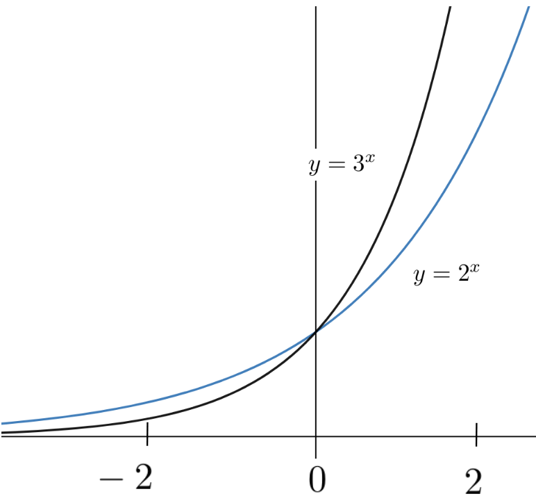
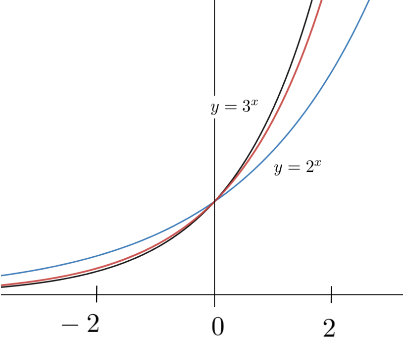
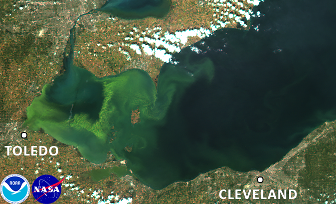

where \(a_1, \ldots, a_n, b_1, \ldots, b_m\) are constants.
Trigonometric Functions:
There are six trigonometric functions: \(\sin(\theta)\text{,}\)\(\cos(\theta)\text{,}\)\(\tan(\theta)\text{,}\)\(\cot(\theta)\text{,}\)\(\sec(\theta)\text{,}\) and \(\csc(\theta).\)
Trigonometric Inverses:
Each of the trigonometric functions has an associated inverse: \(\inverse\sin(\theta)\text{,}\)\(\inverse\cos(\theta)\text{,}\)\(\inverse\tan(\theta)\text{,}\)\(\inverse\cot(\theta)\text{,}\)\(\inverse\sec(\theta)\text{,}\) and \(\inverse\csc(\theta).\)
Algebraically combining this basic set of fourteen functions allows us to build almost all of the functions you have encountered so far in your mathematics education. Loosely speaking what makes these elementary is that we dont need Calculus to define them.
But Calculus gives us several different ways to define a multitude of new functions. Each such function is a new tool. New tools give us the means to solve new problems, and a new way to approach old problems. This is one reason that the invention of Calculus was such an important advance.
Functions which require Calculus for their definition are (usually) called analytic functions.
If we did not already know that the function \(y(x)=x^2\) satisfies equation(8.1) we could give a name to the solution (sqr\((x)\text{,}\) perhaps?) and by fiat, define sqr\((x)\) to be whatever function solves this equation. But there is a problem. The solution of equation(8.1) is a multifunction, remember? To choose a single branch we need to impose an initial condition.
Problem8.2.
Solve each of the following IVPs. Graph your solutions:
\(\displaystyle \dfdx{y}{x}=2x,\ \ \ y(0)=0\)
\(\displaystyle \dfdx{y}{x}=2x,\ \ \ y(0)=1\)
\(\displaystyle \dfdx{y}{x}=2x,\ \ \ y(0)=-10\)
\(\displaystyle \dfdx{y}{x}=2x,\ \ \ y(1)=2\)
\(\displaystyle \dfdx{y}{x}=2x,\ \ \ y(-1)=1\)
\(\displaystyle \dfdx{y}{x}=x,\ \ \ y(0)=1\)
\(\dfdx{y}{x}=2x,\ \ \ y(x_0)=y_0\) where \(x_0\) and \(y_0\) are fixed, but unspecified constants.
Simply naming the function tells us nothing about it. However the IVP itself can give us a some insight into the nature of the solution. For example since \(2x\lt 0\) when \(x\lt 0\text{,}\) the slope of the graph of \(y(x)\) is clearly also negative when \(x\lt 0\text{,}\) Similarly, the slope of the graph of \(y(x)\) is positive when \(x\gt 0\text{.}\)
Of course we already knew that since we have a formula for \(y(x)=\text{sqr}(x)=x^2\text{.}\) This wont be true in the next section.
Section8.2The Natural Exponential
\TLogo{PSP:four-proof-irrat}
In exactly the same way that we can define \(\text{sqr}(x)\) via any of the Initial Value Problems in Problem8.2 we can declare, by fiat, the following:
is called the natural exponential function, denoted \(\exp(x)\text{.}\)
But of course as we said earlier, simply giving the function a name does not tell us anything about it.
In Section7.3 we investigated this IVP in some detail and we were able to draw an approximate graph of the natural exponential (at least near the initial value, \(\exp(0)\)). We will explore this function further here.
Recall that the Taylor Polynomial of a function, as described in Section7.4, equation(7.11), given by
can approximate the function \(y(x)\) well, near a given point. Since we know the value of the natural exponential at the initial value lets try to generate the Taylor Polynomial approximation of \(\exp(x)\) near that point.
Notice that because \(\exp(x)\) satisfies IVP(8.2) it also satisfies each of the following (why?):
Let \(T_n(x)\) be the \(n\)th degree Taylor polynomial approximation of \(\exp(x)\) use equation(8.3) and the initial value \(\exp(0)=1\text{,}\) to show that
Section8.3Exponential Growth and Exponential Notation
It is now time to solve IVP(8.2) by finding an explicit formula for \(\exp(x)\text{.}\)
But how? Nothing really presents itself as a potential solution so what should we do? Since we dont seem to have any better options, lets see if we can guess a solution.
DIGRESSION: The Art of Guessing Effectively.
No, really. Guessing can be surprisingly effective.
You know this of course. Youve been doing it all of your life, but in the past especially in math classes guessing was probably discouraged so you tend to deny doing it, possibly even to yourself. Its OK. Guess anyway. We wont tell anyone.
The fact is that guessing is a tried and true solution technique and we encourage you to use it regularly. Guessing is nothing more, or less, than relying on your native intuition.
Effective guessing is a skill. You need practice to do it well and, unfortunately, you have probably not had much chance to practice that skill in the context of mathematics. So we encourage you to guess often from now on. But be aware that making a guess is a process, not an event. If you guess wrong, which is most likely, then you have a new, related problem to think about: All of your intuition said this was a good guess. Why didnt it work? The answer to that question almost always gives some insight into the original problem. Even a bad guess can be useful.
However a bad guess, indeed any guess, in isolation is a waste of time. You must also take the time to figure out why your bad guess doesnt work.
But the real danger in guessing the reason it is usually discouraged is that when you do guess correctly, or nearly so, it is very tempting to just move on from there. Dont do that.
Guessing correctly means that your intuition was very good. But intuition is unconscious. It is at least as important to understand where a good guess came from, and why it worked as it is to understand why a bad guess didnt work. But when you guess well it is extremely tempting to just take your good guess and run with it. This will invariably lead to confusion later. So, when you guess correctly take a few moments to think about the intuition that led you to that guess. Bring that intuition out of your unconscious mind and into your conscious mind. If you dont do that your guesses are a waste of your time.
So lets take a guess. There is no need to get really crazy about it though. We already know that the Taylor polynomial of \(\exp(x)\) approximates \(\exp(x)\text{.}\) Maybe we can find an \(n\) large enough that the approximation becomes exact.
Drill8.5.
Show that none of the following is a solution of IVP(8.2). (Observe that if \(y(x)\) is a solution then \(y-\dfdx{y}{x}=0\text{.}\))
(a)
\(y= 1+x+\frac{x^2}{2!}+\frac{x^3}{3!}\)2
The notation \(3!\) is read three factorial and means \(3\cdot2\cdot1.\) Similarly \(4!=4\cdot3\cdot2\cdot1\) and in general \(n!=n(n-1)(n-2)\ldots3\cdot2\cdot1\)
Since the difference between \(y\) and \(\dfdx{y}{x}\) is that stupid one-millionth term which is very small it is clear that weve almost got something here. Surely we can handle that last term somehow!
Sadly no, we cant. In fact no polynomial will solve IVP(8.2).
Drill8.7.
Show that the previous paragraph is true. That is, show that there is no (non-zero) polynomial that solves the differential equation: \(\dfdx{y}{x}=y.\)
Hint.
Consider the degree of the polynomial and the degree of its derivative.
Since no polynomial will work a fair question is: Why have we taken you on this wild goose chase?
In fact, we almost have a solution here. One million is a very large number, so one million factorial (\(1000000!\) is inconceivably large. Thus for any value of \(x\) were likely to encounter that one millionth term, \(\frac{x^{1000000}}{1000000!},\) is so incredibly close to zero that it almost isnt really there. And if it isnt really there then
No, of course not. Although that last term really is practically zero it is not actually zero, no matter how small it is. As Newton said, In mathematics the smallest of errors must be dealt with.
So we havent solved our problem in the sense of having an explicit formula for \(\exp(x)\text{.}\) But we do know a great deal about it at this point. In particular we know that the Taylor polynomial \(1+x+\frac{x^2}{2!}+\frac{x^3}{3!} + \ldots +
\frac{x^{999999}}{999999!} + \frac{x^{1000000}}{1000000!}\) will be a very good approximation of \(\exp(x)\text{,}\) at least for values of \(x\) near zero.
But if there is no polynomial that solves equation(8.2) does that mean there is no solution at all? Certainly not. In fact, since that last term of the polynomial seems to be the stumbling block the solution is clear: All we need to do is not have a last term.
This is a startling idea but before we dismiss it, lets take our own advice from Digression: The Art of Guessing Effectively. Well trust our intuition, but also examine it closely. What were saying is that the solution of equation(8.2) is:
where the dots at the end mean that the summation goes on forever. There is no last term.
You would expect a polynomial that doesnt end to be called an infinite polynomial but it is not. Such an expression is called an infinite series. Usually we just call it a series. A series is not a polynomial. That is, a polynomial is defined to have only finitely many terms and a series is defined to have infinitely many terms. We distinguish them from each other specifically so that we dont confuse a series with a polynomial.
An obvious question to ask is, Does this infinite series even mean anything? Or, equivalently, What does it mean to add up infinitely many numbers? These are excellent questions which will have to be addressed eventually. But for now we wont let them trouble us. Well just assume that \(y=1+x+\frac{x^2}{2!}+\frac{x^3}{3!}+\ldots\) makes sense, in the same way we assumed that differentials make sense and defer those questions until later.
Drill8.8.
Having set aside those deeper questions (for now) we can show that we have found the solution of our IVP.
(a)
Differentiate the series \(\displaystyle y= 1+x+\frac{x^2}{2!}+\frac{x^3}{3!} + \ldots \) term-by-term to show that \(\displaystyle \dfdx{y}{x}= y\text{.}\)
(b)
Show that \(y(0)=1.\)
Hint.
Yes, this really is as easy as it looks.
We would be remiss if we did not mention that we have lead you up to the edge of an abyss here. It is not at all clear that the Sum Rule for differentiation can be extended to infinite sums in any meaningful manner. In fact, this is a very delicate question. Sometimes the extension is valid and sometimes it is not. This is another of the foundational questions (like What is a differential?) that took mathematicians nearly \(200\) years to resolve and understanding that resolution requires the use of considerably more subtle tools than we have at this point. You will learn more about this in the next course. For now we will assert the prerogative of the teacher and simply tell you that in this case term-by-term differentiation still works.
The result of Drill8.8 seems to show that we have the exact solution of IVP(8.2) in the form of the infinite series,
This actually is a correct solution of IVP(8.2), and eventually you will learn to work with infinite series solutions of IVPs directly. But, unfortunately, we dont yet have the tools that allow us to do that. So we will have to find another way. What now?
The sketch above shows the graph of the polynomial \(y= 1+x+\frac{x^2}{2!}+\frac{x^3}{3!}+ \cdots + \frac{x^{50}}{50!}\) which we believe, from our work in Section7.4, should be a good approximation to \(\exp(x)\text{,}\) at least when \(x\) is near zero. When we zoom in on the part of the graph which is near \(x=0\) we see that the following graph should be a reasonable approximation to the solution of IVP(8.2) in the interval shown.
In your earlier math courses you may have seen graphs that looked like this before. If not, then consider the following graphs of the exponential functions, \(y=2^x\) and \(y=3^x\) and notice that they are very similar to the graph of \(y=
1+x+\frac{x^2}{2!}+\frac{x^3}{3!}+ \cdots + \frac{x^{50}}{50!}\text{.}\)

This is much clearer when we graph all three functions on the same axes as seen here:

As you can plainly see near \(x=0\) they are indeed very similar.
Since the polynomial \(y= 1+x+\frac{x^2}{2!}+\frac{x^3}{3!}+
\cdots + \frac{x^{50}}{50!}\) is an approximation to the solution of IVP(8.2) it appears that either of \(y(x)=2^x\) or \(y(x)=3^x\) might be a viable candidate for the solution of our IVP. Is it possible weve had the solution in our hands all along? Lets differentiate \(y(x)=2^x\) to see if solves IVP(8.2).
If \(y(x)=2^x\) then \(y(0)=2^0=1\) so the initial condition is satisfied.
To check the differential equation it is tempting to assume that we can apply the Power Rule, giving us \(\dfdx{(2^x)}{x} = x2^{x-1}\text{.}\) But this cant possibly be correct because when \(x\) is negative then \(x2^{x-1}\) is also negative. But the slope of \(y(x)=2^x\) is positive everywhere as you can see from its graph.
In fact, none of our differentiation rules will give us the derivative of \(y=2^x.\) So we will have to go back to basics and find \(\dfdx{y}{x}\) from first principles, without using any of our Differentiation Rules.
Let \(y(x)=2^x\) and observe that \(\dx{y}\) is the (infinitesimal) difference between \(y(x+\dx{x})\) and \(y(x)\text{,}\) or
The differential in the exponent is a bit concerning. We will have to be clever.
We have become comfortable thinking of \(\dx{x}\) as infinitely small, but it should be clear that if we take \(\dx{x}\) to be a very small, but finite number, say \(\dx{x}= 0.0000001,\) we can use equation(8.7) to approximate \(\dfdx{y}{x}\) as accurately as we wish.
Replacing \(\dx{x}\) with \(0.0000001\) on the right side of equation(8.7) we get
This isnt bad for a first try! Do you see that we have almost satisfied the differential equation? We have \(\dfdx{(2^x)}{x}\approx (0.7)2^x\) when what we need is \(\dfdx{(2^x)}{x}=2^x\text{.}\) The constant factor is a bit too small. If it were \(1\) instead of \(0.7\) wed have the solution of IVP(8.2). This is hopeful.
Performing the same calculation using \(y(x)=3^x\) we see that once again we almost have a solution:
The initial condition is still satisfied and once again the differential equation part of IVP(8.2) is almost satisfied. But this time the coefficient, \(1.1\) is a bit too big.
It stands to reason that there must be some number between \(2\) and \(3\) with the property that \(y=(\text{number})^x\) satisfies IVP(8.2). For historical reasons this number, whatever it is, has been named \(e\text{.}\) So the solution of IVP(8.2) is
\begin{equation*}
\exp(x)=e^x.
\end{equation*}
END OF DIGRESSION
We originally named this function \(\exp(x)\text{.}\)That is still a valid name for it, just as sqr(\(x\) is a valid name for the function sqr\((x)=x^2\text{.}\) However, just as the formula \(y(x)=x^2\) better represents the way we usually think about the squaring function (square the input variable, the notation \(y(x)=e^x\) better represents the way we usually think about the natural exponential function.
You should think of the natural exponential as this funny number \(e\) raised to the power of the input variable. However, it is a curious fact that the modern definition of the natural exponential is not \(e^x.\) The modern definition is actually the infinite series we derived earlier:
It would not necessarily be easy to compute the square root of \(e\) but were only asking about the meaning of our symbols here. Since \(e\) is a positive number we can take its square root and that is what \(\sqrt{e}\) means, even if we cant compute it. In precisely the same way \(e^{5/7}=\sqrt[7]{e^5}\text{,}\)\(e^{2/3}=\sqrt[3]{e^2}\) and in general if \(a\) and \(b\) are positive integers, \(e^{a/b}=\sqrt[b]{e^a}\text{.}\)
But what could the expression \(2^e\) possibly mean? Since \(e\) is not an integer it doesnt mean \(e\) copies of \(2\) multiplied together. Since \(e\) cant be represented as ratio of integers (because it is irrational after all) it doesnt mean some root of \(2\) raised to a power the way that say, \(2^{5/7}\) means \(\sqrt[7]{2^5}.\) This difficulty is compounded if we ask for the meaning of \(e^\pi\) or \(\pi^e\) since both \(e\) and \(\pi\) are irrational.
And this is not just a matter of not knowing the value of \(e\text{.}\) The difficulty is built into the real numbers. Recall that we saw the same issue come up in Section4.3 when we tried to extend the Power Rule to irrational exponents. This is weird.
Even if we cant compute it we need to find a way to give meaning to the expression \(e^x\) that works when \(x\) is irrational. Ideally, wed like our interpretation to be consistent with our understanding that \(e^3= e\cdot e\cdot e.\) This is precisely why we define natural exponential as an infinite series. It can be shown (though we will not show it here) that if \(m\text{,}\) and \(n\) are integers with \(n\gt0\) then
If there is only one solution to IVP(8.2) (there is) then \(y(x) = e^x\) and \(y(x)=1+x+\frac{x^2}{2!}+\frac{x^3}{3!}+\ldots\) must be the same solution. Defining \(\exp(x)\) as
Of course we are still free to think of the natural exponential as \(e^x\text{,}\) regardless of the definition and we encourage you to do that. It can be very helpful.
Use equation(8.12) to show that \(\inverse{e} \approx 0.36788\text{.}\) Compare this with the numerical value of \(\frac1e\approx\frac{1}{2.71828}\) you get from a calculator.
Use equation(8.12) to show that \(\sqrt{e} \approx 1.64872\text{.}\) Compare this with the numerical value of \(\sqrt{e}\approx \sqrt{2.71828}\) you get from a calculator.
Use (8.13) to show that --> \(\inverse{e} \approx 0.36788\text{.}\) Compare this with the numerical value of \(\frac1e\approx\frac{1}{2.71828}\) you get from a calculator. \\
Use (8.13) to show that \(\sqrt{e} \approx 1.64872\text{.}\) Compare this with the numerical value of \(\sqrt{e}\approx \sqrt{2.71828}\) you get from a calculator.
The function \(y(x)=e^x\) is called the natural exponential function and \(e\) is its base just as \(2\) is the base of the exponential function \(y(x)=2^x\) and \(3\) is the base of the exponential function \(y(x)=3^x\text{.}\)
Of course, we only know that \(2\lt e\lt3\) so far. How might we find a better approximation to \(e\text{?}\)
Problem8.12.
Since we know that \(\exp(x)= 1+x+\frac{x^2}{2!}+\frac{x^3}{3!}+ \cdots \) solves IVP(8.2), it should be clear that we can approximate \(e = e^1\) by computing the sum of, say fifty, terms of the series.
Compute this approximation using your favorite computing technology to confirm that \(e\approx 2.718\text{.}\) (If you dont have any computing technology available just compute the sum of the first six terms.)
The upshot of Problem8.12 is that if we replace \(2\) with \(e\approx 2.718\) in equation(8.6), or if we replace \(3\) in equation(8.9) the constant the result should be closer to \(1\) than if we use \(0.7\) or \(1.1\text{,}\) respectively.
We used an approximation of \(e\text{,}\) not \(e\) itself, and
\(0.0000001\) is a very small, finite number, not a differential.
But the evidence is compelling that \(\exp(x)=e^x\) is the solution of the IVP(8.2). Henceforth then, we will reserve the letter \(e\) to designate the base of the natural exponential function.
You might ask, Why not just figure out what \(e\) actually is, and use that? Why use the letter \(e\text{?}\) The answer is that \(e\) is an irrational number much like \(\pi\text{.}\) Among other things this means that its decimal expansion never ends, so we use \(e\) for the same reason we use \(\pi\text{.}\)
We now have a new differentiation rule to remember. This one is particularly easy to remember: The natural exponential function is its own derivative,
Compute \(\dx{y}\) for each of the following, and use this to find the IVP that each one solves. (Use a substitution to make each one easier on your eyes.)
\(\displaystyle y=e^{2x}\)
\(\displaystyle y=e^{\pi x}\)
\(\displaystyle y=e^{\sqrt{2}x}\)
\(y=e^{rx}\) where \(r\) is an unknown constant.
Problem8.15.
For each of the following find \(\dfdx{y}{x}\text{:}\)
\(\displaystyle y=\sin(e^x)\)
\(\displaystyle y=e^{\sin(x)}\)
\(\displaystyle y=\cos(e^x)\)
\(\displaystyle y=e^{\cos(x)}\)
\(\displaystyle y=e^{5x}\sin(\pi x)\)
\(\displaystyle y=e^{x}\cos(3x)\)
\(\displaystyle y= \dfrac{x}{e^x}\)
\(\displaystyle y=\frac{e^x-1}{e^x+1}\)
\(\displaystyle y= \dfrac{e^x}{4x^2+3x-5}\)
\(\displaystyle y=e^{x^2+\sin(x)}\)
\(\displaystyle y= \frac{3\sqrt{x}+1}{e^x}\)
\(\displaystyle y= \tan(e^x)\)
Problem8.16.
Show that the equation of the line tangent to each function below at the given point is the given line.
Show that when we use Newtons Method to approximate the coordinates of the intersection point of the curves \(y = -x\) and \(y = e^x\text{,}\) we get the iteration formula
Starting with \(r_0=0\) compute \(r_1, r_2\text{,}\) and \(r_3\text{.}\) Compare your approximation with a solution obtained from whatever computing technology you prefer.
Drill8.18.
(a)
Show that when we use Newtons Method to approximate the coordinates of the intersection point of the curves \(y = -x\) and \(y = e^x\text{,}\) we get the iteration formula
Starting with \(r_0=0\) compute \(r_1, r_2\text{,}\) and \(r_3\text{.}\) Compare your approximation with a solution obtained from whatever computing technology you prefer.
Drill8.19.Find the Pattern.
(a)
Compute \(\dfdx{y}{t}\) for each of the following:
\(\displaystyle y=te^t\)
\(\displaystyle y=(t+1)e^t\)
\(\displaystyle y=(t^2+t+1)e^t\)
\(\displaystyle y=(t^3+t^2+t+1)e^t\)
(b)
From your work in part (a) what do you expect \(\dfdx{y}{t}\) to be if
Show that your guess is correct or find the correct solution if you guessed wrong.
Drill8.20.
For each of the following, assume that \(x=x(t)\text{,}\)\(y=y(t)\text{,}\) and \(z=z(t)\text{.}\) Find an equation relating \(\dfdx{x}{t}\text{,}\)\(\dfdx{y}{t}\text{,}\) and \(\dfdx{z}{t}\text{.}\)
(a)
\(e^y=x^2+3z-2\)
(b)
\(\sin(xy)=(e^z)^y\)
(c)
\(\tan(x+z)=e^ye^x\)
(d)
\(e^{xyz}=3\)
(e)
\(x^2+y^2+z^2=2\)
(f)
\(e^{x^2+y^2+z^2}=2\)
Drill8.21.
(a)
Show that \(y=e^{t+a}\) satisfies \(\dfdx{y}{t}=y\) for any constant \(a\text{.}\) How does this problem differ from IVP(8.2).
(b)
Show that \(y=Ae^t\) also satisfies \(\dfdx{y}{t}=y\) for any constant \(A\text{.}\)
(c)
Parts (a) and (b) imply that \(e^{t+a}=Ae^t\text{.}\) Use this knowledge to to show that
You might recognize this property of exponents from your Algebra class.
Drill8.23.
(a)
For \(y=e^x\text{,}\)\(y=\sin(x)\text{,}\) and \(y=\cos(x)\) compute
\(\displaystyle \dfdx{y}{x}\)
\(\displaystyle \dfdxn{y}{x}{2}\)
\(\displaystyle \dfdxn{y}{x}{3}\)
\(\displaystyle \dfdxn{y}{x}{4}\)
(b)
Does it seem significant that \(\dfdxn{y}{x}{4}=y\) for all three functions? What does your intuition say?
Section8.4Hyperbolic Trigonometry: The Hanging Chain
We commented in Section5.10 that Galileo believed erroneously that a chain hanging from two pegs falls naturally into the shape of a parabola. In Problem5.76 we showed that Galileo was wrong but we have not yet addressed the question: What is the shape of a hanging chain?
Recall that the hanging chain must satisfy the differential equation
where \(w\) is the weight density of the chain and \(H\) is the (constant) magnitude of the horizontal tension. In Problem8.24 we will see that although the natural exponential function \(y=e^x\) is not the solution itself, it is the key to the solution.
Problem8.24.The Shape of a Hanging Chain.
The Calculus in this problem is pretty straightforward but the Algebra gets a bit messy. To avoid some of this mess in part8.24.a, part8.24.b, and part8.24.c we will solve the special case where \(\frac{w}{H}=1\text{.}\) In part8.24.d well use our solution of this special case to solve the original problem.
So assume that \(\frac{w}{H}=1\text{.}\) For this special case we will call our variables \(X\) and \(Y\text{,}\) rather than \(x\) and \(y\text{.}\) The reasons for this will become clear in part8.24.d.
where \(w\) is the weight density of the chain, and \(H\) is the constant (magnitude of the) horizontal tension.
Hint.
This is essentially the same computation you did for the special case, but the Algebra is messier. Consider making it easier on the eyes with the substitutions
We already know from part8.24.c that \(\dfdxn{Y}{X}{2}=\sqrt{1+\left(\dfdx{Y}{X}\right)^2}\text{.}\) Notice that \(y=\frac{H}{w}Y(X)\) and use this to show that \(\dfdx{y}{x}=\dfdx{Y}{X}\text{ and that }
\dfdxn{y}{x}{2}=\frac{w}{H}\dfdxn{Y}{X}{2}.\)
(e)
Assume that \(w=1 \text{,}\) and \(H=1\) and graph the curve given in equation(8.14). Does it look like a hanging chain? What happens to the graph if we use \(w=1\) and \(H=2\text{,}\) or \(w=2\) and \(H=1\text{?}\) Does this make sense physically? Why or why not?
The expressions \(\frac12\left(e^x+e^{-x}\right)\) and \(\frac12\left(e^x-e^{-x}\right)\) arise frequently in many scientific and engineering problems and have been named the hyberbolic cosine and hyberbolic sine and are denoted \(\cosh(x)\) and \(\sinh(x)\text{,}\) respectively. As you see these names break with the longstanding mathematical tradition of giving important functions three letter names. Why do you suppose we would do that?
Recall that the unit circle, \(x^2+y^2=1\text{,}\) is parameterized by
That is, show that \(x^2-y^2=\cosh^2(t)-\sinh^2(t)=1\text{.}\)
The obvious similarity between the formulas
\begin{equation*}
\cos^2(x)+\sin^2(x)=1
\text{ and } \cosh^2(x)-\sinh^2(x)=1
\end{equation*}
is not a coincidence. It also explains why they are called Hyperbolic Trigonometric Functions.
The many scientific and engineering problems that involve the hyperbolic functions are slightly outside the scope of this text. So we will only examine some of their more elementary properties in the next problem.
In addition to \(\cosh(x)\) and \(\sinh(x)\) we make the following definitions which are clearly modeled on the definitions of the trigonometric functions:
When he designed the Gateway Arch in St. Louis, Missouri, architect Eero Saarinen4
https://en.wikipedia.org/wiki/Eero_Saarinen
wanted to build it in the shape of an inverted catenary. The arch would have a height of \(630\) feet and a width of \(630\) feet. Its cross sections would be equilateral triangles with sides \(54\) feet at ground level shrinking to \(17\) feet at the top. To obtain the shape of the arch, Saarinen decided that the centers of the triangular cross sections should follow the curve
Show that \(y=68.7672\cosh(0.0100333x)\) is not a true catenary.
(b)
Plot the graph of equation(8.15), and determine the \(x\) and \(y\) intercepts.
(c)
Notice that the answers in part (b) do not determine an arch whose height and width are exactly \(630\) feet. This is because this curve represents the centers 6
Actually the centroids. You will learn about centroids when you take Integral Calculus.
of the triangular cross sections.
The sketch below represents the cross-sectional slice of the arch, which is an equilateral triangle. In the sketch each side is equal to \(s\text{,}\) and the point \(P\) is equidistant from \(A\text{,}\)\(B\text{,}\) and \(C\text{.}\) Show that the perpendicular distance from \(P\) to one side is \(\frac{s}{2\sqrt{3}}\text{.}\)
Use the result in part (i) to determine the height and width of the arch.
(d)
The curve Saarinen used is called a weighted catenary. It is the shape of a hanging chain whose density is not uniform. Saarinen decided to go with this since the size of the triangles was decreasing as they approached the apex of the arch. A true catenary arch would be something of the form
Plot the graphs of equation(8.15) and equation(8.16) on the same set of axes and use this to show that they both have the same requisite height and width.
Section8.6Exponential Growth
Example8.31.Population Growth.
Suppose we start with a colony of \(10\) grams of bacteria in a Petri dish and we wish to model the growth of the population as a function of time. In order to keep our initial discussion simple we begin by assuming that \(30\%\) of our bacteria divide once per day at the same time. Such a population is growing at a rate of \(30\%\) per day. If we start with \(10\) grams of bacteria on day zero, then on day one well have \(30\%\) more, or \(13\) grams. On day two well have \(30\%\) more than on day one, or \(16.9\) grams. It should be clear that the rate of growth from day \(n\) to day \(n+1\) is proportional to how many bacteria we have on day \(n\text{.}\) Thus from any one day to the next we see that the change in \(P\) (that is, \(\Delta P\)) is given by
\begin{equation}
\Delta P = 0.3 P\Delta t\tag{8.17}
\end{equation}
where \(\Delta t = 1\) day, and \(\Delta P\) is the change in population on that day.
But we assumed that \(30\%\) of the bacteria were dividing in sync once per day, which is unrealistic. To get closer to reality suppose next that enough of them divide during any one hour so that at the end of one day the population has still grown by \(30\%\text{.}\) Then from any one hour to the next we again have equation(8.17) but this time \(\Delta t\) is equal to one hour, or \(\frac{1}{24}\) day. However, we dont have to measure time in days. If we measure it in hours instead we again have \(\Delta t=1 \text{ hour } = \frac{1}{24} \text{ day}\text{.}\) The constant factor is still \(0.3\) because we assumed that the population was growing at \(30\%\) per day, and this is still true. That factor is called the nominal growth rate.
If we measure time in seconds the same reasoning will give us equation(8.17), with \(\Delta t=1 \text{ second }
= 1.15741\times 10^{-5} \text{ day}\text{.}\) If we measure in nanoseconds we get equation(8.17), with \(\Delta t=1 \text{ nanosecond } = 1.15741\times 10^{-14} \text{ day}\text{.}\) If we measure time in infinitesimal increments we get
Notice that we are using the Principle of Local Linearity here. In this infinitesimal time interval the nominal growth rate, \(0.3P \text{,}\) is virtually constant and so we are treating it as linear growth.
Since we started with \(10\) grams of bacteria we have the initial condition \(P(0)=10\text{.}\) This says that the amount of bacteria at time \(t\) must satisfy the IVP:
Take specific notice that the differential equation in IVP(8.18) expresses the idea that the rate of change of the population, \(\dfdx{P}{t}\text{,}\) is proportional to the size of the population, \(P\text{.}\) The constant of proportionality is \(0.3\text{,}\) or \(30\%\text{.}\)
Clearly there is nothing particularly special about the number \(0.3.\) If our colony had been increasing at a nominal rate of \(15\%\) wed have arrived at the IVP:
From Problem8.32 we see that a solution of the differential equation in our bacterial growth problem, IVP(8.18), is \(\rho(t)= e^{0.3t}\text{.}\) But \(\rho(t)\) does not satisfy the initial condition since \begin{align*} \rho(0)\amp =e^{(0.3)0}\\ \amp = e^0\\ \amp =1\neq10, \end{align*} so \(\rho(t)\) cant be the solution of our bacterial growth problem, IVP(8.18).
Weve found that \(P(t)= e^{0.3t}\) satisfies the differential equation but not the initial condition. Can we tweak this so that it satisfies the initial condition?
Drill8.33.Find the Pattern.
(a)
Show that \(P(t)=5e^{0.3t}\) solves the differential equation: \(\dfdx{P}{t}=0.3P\text{.}\) What is \(P(0)\text{?}\)
(b)
Show that \(P(t)=20e^{0.3t}\) solves the differential equation: \(\dfdx{P}{t}=0.3P\text{.}\) What is \(P(0)\text{?}\)
(c)
Show that if \(\alpha\) is any constant then \(P(t)=\alpha e^{0.3t}\) solves the differential equation \(\dfdx{P}{t}=0.3P\text{.}\) What is \(P(0)\text{?}\)
(d)
Did your answer in part (c) account for the possibility that \(\alpha=0\text{?}\) If not, redo it assuming that \(\alpha=0\text{.}\) What is \(P(t)\) in this case?
Drill8.34.
(a)
Use the results of parts (a) and (b) of Drill8.33 to show that
According to the model in part (a), how much did the colony grow over the first day and how does this compare to the growth rate of \(30\%\text{?}\)
(c)
Use the model to predict the size of the colony in \(30\) days. Is this reasonable? What does it say about our assumptions in this problem?
(d)
Suppose our growth rate was \(15\%\) per day. Would the bacteria have grown half as much in the first day as it did when the growth rate was \(30\%\) per day?
Make your best guess.
Use Calculus to test your guess.
In general, if we start with a population of, say \(P_0\text{,}\) and the rate of change of \(P(t)\) is proportional to \(P\) itself then it will satisfy an IVP of the form:
The constant \(r\) is called the nominal growth rate as weve seen. Because \(r=\frac{\dfdx{P}{t}}{P}\) it is also called the relative growth rate of the population and is often given as a percentage, as we have done here.
The IVP(8.19) should look familiar to you. Notice that when \(r=1\) and \(P_0=1\) it is the same as IVP(8.2) which we used to define the the natural exponential. Except, of course, for the names of the variables. To put it another way IVP(8.19) is the special case of IVP(8.2) when \(r=1.\) Since these are so similar it is not surprising that the solution of IVP(8.19) involves the natural exponential.
Show that \(P(t)=P_0e^{rt}\) is a solution of IVP(8.19).
Part (c) in Problem8.34 indicates that there are limitations to the usefulness of IVP(8.18) and its solution, \(P(t)=10e^{0.3 t}\text{.}\) If we use it to predict how much bacteria there would be after one year we get \(P(365)=10e^{0.3\times365}\approx3.59\times10^{48}\) grams. Since current estimates of the mass of the entire universe are around \(6\times10^{27}\) grams, it is pretty clear that our model doesnt work in the long term.
Clearly the bacteria can not sustain a growth rate of \(30\%\) indefinitely. If nothing else, they will eventually run out of food. Our point here is that this model, like all models, is limited. To use a mathematical model effectively we need to stay within its limitations.
But in the short term this is actually a very good model. The picture below shows the surface of Lake Erie during what is called an algal bloom.

The green discoloration on the western side of the lake is from an explosive (exponential) growth of algae. When the conditions for algae growth are nearly optimum if there is abundant food, there is room for the population to expand into, and the water temperature is exactly right the population of algae in Lake Erie tracks with our model nearly perfectly. The quantity of algae grows exponentially until the conditions become sub-optimal. Then the population of algae drops again to normal levels.
An algal bloom can happen in any body of water where algae grow. They are common in alpine lakes in the early spring when nutrients are released by the melting snow, but the fish and insects that feed on the algae have not yet emerged in large numbers. We will return to this problem in Section11.1 where we will tweak this model to extend its usefulness to longer periods of time. But for now we will continue to use this exponential growth model with the understanding that for large values of \(t\) it is unreliable.
Drill8.36.
Suppose our bacteria population is increasing at a nominal rate of 10% per day. If we started with 100 grams, how much would there be after one, two, and three days?
Speaking loosely, the observation that lead us to IVP(8.19) is that the number of baby bacteria in a given generation is proportional to how many parental bacteria were present in the previous generation. Speaking very loosely, more mamas and poppas now, means proportionally more babies later. This is all that is required for exponential growth to occur.
Section8.7Exponential Functions and Compound Interest
The natural exponential function also arises naturally in financial mathematics. If we invest money in a bond which pays a nominal interest rate of \(5\%\) annually, and the interest is compounded quarterly then the effective yield will be \(5.09\%\text{.}\)
There is a lot of financial jargon in the previous paragraph which makes it hard to understand if we dont speak financial-ese. So we will take a few pages to learn the vocabulary. After that things will clear up pretty quickly.
To start, the effective yield represents the actual amount of money earned at the end of one year how much money the investment actually pays out. For example, if the investment was not compounded at all, then at the end of one year, every dollar invested would yield \(1.05\) in return, so the effective yield is the same as the nominal yield: \(5\text{.}\)
If the investment is compounded semiannually (twice per year), then half of interest earned is paid out midway through the year. This money is then re-invested for the next half year. This is summarized in the table below. The effective yield in this case is approximately \(5.06\%\text{.}\)
Notice how these three tables differ, and how they are similar to each other. The effective yield comes from the last entry in each table. It is the difference between the amount the investment is worth at the end of the year and what it is worth at the beginning of the year. So if we compound quarterly the effective yield is \(1.0509-1=0.0509=5.09\%. \)
Similarly, if the investment is compounded daily, then the effective yield is \(\left(1+\frac{0.05}{365}\right)^{365}-1\approx0.0513 = 5.13\%\text{.}\) If we compound \(5\%\) nominal interest, \(n\) times in a year, then the return on an investment of one dollar at the end of one year would be \(\left(1+\frac{0.05}{n}\right)^{n}\) dollars, after \(2\) years \(\left(1+\frac{0.05}{n}\right)^{2n}\) dollars, after \(3\) years \(\left(1+\frac{0.05}{n}\right)^{3n}\) dollars.
In general if we let \(A(t)\) denote the value of the investment of one dollar earning \(5\%\) annually, compounded \(n\) times per year, after \(t\) years, we have
What if the investment was compounded continuously? That is, suppose the interest is being continuously paid out and simultaneously reinvested? Obviously, this cant actually be done, but it comes to the same thing if at the end of the year we get an effective yield that is equal to the effective yield that would come from continuous compounding. All we have to do is figure out what this is.
To do this, it will be convenient to write \(A(t)\) as
We are particularly interested in the quantity \(\left(1+\frac{1}{m}\right)^{m}\) as we compound the interest more frequently (as \(m\) becomes very large). The following table shows some values of \(\left(1+\frac{1}{m}\right)^m\text{,}\) for large values of \(m\text{.}\) Does the numbers in the right column look familiar to you?
In Section8.2 we saw that \(e\approx2.7182\text{.}\) From this table it would appear that \(\left(1+\frac{1}{m}\right)^m\) approaches the number \(e\) as \(m\) grows larger that is, as we compound the interest more frequently. We will show that this is in fact the case in Section12.4.
If this is true (it is) then if we compound the interest continuously we have
This equation was derived under the assumption that our initial investment was only \(1\text{.}\) In general if the initial investment is \(A_0\) we have
The function \(A(t)\) has the same form as our solution of IVP(8.18) so it must satisfy the differential equation: \(\dfdx{A}{t}= 0.05A\text{.}\) Confirm that it does.
This is interesting. It appears that IVP\(8.20) models continuously compounded investments as well as population growth. Does this make sense to you?
Think about it for a moment. When money invested the rate of return (rate of growth) is always proportional to the initial investment, in the same way that the rate of growth of a population (the rate of return) is. Speaking very loosely, the amount of baby dollars in the next generation will be proportional to the amount of mama dollars and papa dollars7
https://www.youtube.com/watch?v=wlbuGdoAFek
in the current generation in the same way that the number of baby bacteria in the next generation is proportional to the number of parent bacteria now. So it makes sense that these two very different real world phenomena are modeled by the same IVP.
From the point of view of a banker or a biologist, these are very different problems so we assign different meanings to the variables and parameters. But since relationship between the variables and parameters is the same whatever we call them, to a mathematician these are the same problem.
This sort of abstraction is one of the strengths of mathematics. It is not at all obvious that population growth, investment income, or nuclear decay (which we will study shortly) are all essentially the same problem. It is only when we have abstracted out the critical features of each that we can see this.
Drill8.42.
(a)
What would the effective yield be for a bond nominally rated at 5% annually, compounded continuously? How does this compare to the effective yield of an investment compounded daily?
(b)
Suppose we had two investments growing continuously with nominal rates of 5% and 10% annually? After one year would the effective yield of the second investment be twice that of the first? Justify your answer.
A natural question to ask is, How long will it take for my money to double? Would an investment compounding continuously at a nominal rate of \(10\%\) double in half the time as one growing at a nominal rate of \(5\%\text{.}\) Take a guess and write it down for later reference.
To answer this question wed need solve \(e^{0.05t}=2\text{,}\) for \(t\) and compare this to the solution of \(e^{0.1t}=2 \text{.}\) To solve either equation we need a way to undo the natural exponential function. That is, we need the inverse of the natural exponential function. This leads us to a discussion of the natural logarithm function in the next section.
Section8.8John Napier Logs In: A Short Introduction to Logarithms
In the \(16\)th and \(17\)th centuries the computational needs of science, introduction engineering, finance and navigation were growing increasingly complex, time-consuming, and error prone. The problem of navigating at sea using only the stars as a guide was particularly vexing. It became increasingly important to find very accurate methods of computation that were also as simple as they could possibly be; that could be broken down into simple steps that anyone could do without necessarily understanding the underlying concepts. The Scottish mathematician John Napier8
(A Wonderful Description of the Canon of Logarithms), published in \(1614\text{,}\) well before Newton or Leibniz were born so logarithms actually predate the invention of Calculus by several decades. He coined the term logarithm from the Greek words logos meaning reasoning, or reckoning and arithmos meaning number. To Napier logarithms were reckoning numbers which seems an apt description, given their original purpose.
To see how logarithms work we start with the observation that
The crucial observation here is that exponentiation (raising to a power) takes the addition of the exponents \(n\) and \(m\) and turns it into the multiplication of \(a^n\) and \(a^m\text{.}\) Of course, multiplying instead of adding makes computations more complex, not less. This is exactly the reverse of what is needed. What Napier wanted was a way to turn the complexity of multiplication into the simplicity of addition. This would make complex computations -- especially computations done by hand with paper and pencil (the only kind there was in those days) much simpler.
To turn multiplication into addition all we have to do is read the equation \(a^{n+m} =a^n\cdot a^m\) in the other direction:
Now the multiplication of \(a^n\) and \(a^m\) has become the addition (in the exponent) of \(n\) and \(m\text{.}\) Of course there is much more to be done to make this a usable computational scheme. But this is the essential idea. For example if we wanted to use this scheme to multiply \(123.2387\times 43.8378\) we would first need to know that \(123.2387 \approx 10^{2.0907}\) and that \(43.8378 \approx
10^{1.6418}\text{.}\) Adding the exponents gives \(3.7325\) so the result of the multiplication is \(10^{3.7325}\approx5401\text{.}\) The way to make this a workable scheme is to compile a large table of numbers and their associated exponents. This is, essentially, what Napier did.
Today we call \(2.0907\) and \(1.6418\) the base 10, or common logarithms, of \(123.2387\) , and \(43.8378\text{,}\) respectively. Notationally we have
which is simply a way to say \(10^{2.0907} =123.2387\) and \(10^{1.6418}=43.8378\) backwards.
In general, \(\log_{10}(10^n)=n\text{,}\) and we see that the function \(\log_{10}()\) simply undoes the function \(f(x) = 10^x\text{,}\) which makes \(\log_{10}()\) the functional inverse of \(f(x) = 10^x\text{,}\) in exactly the same way that \(\inverse\tan(x)\) is the functional inverse of \(\tan(x)\) as you recall from Section6.4.
To use a table of base \(10\) logarithms to find the product of two numbers we would first look up the logarithm of each number, then add the logarithms. The resulting sum is the base \(10\) logarithm of the product, so wed look up in our table what this sum is the logarithm of. The result is the product of the two original numbers. Since the invention of modern computing technology the original purpose of base \(10\) logarithms simplifying numerical computations is completely obsolete. So tables of base \(10\) logarithms11
are rarely seen in the wild anymore On the other hand the natural exponential function \(\exp(x)=e^x\) and its functional inverse, the natural logarithm are both still quite useful in a variety of contexts, both scientific and mathematical.
The graph of the natural exponential is very similar to the graph of \(y=3^x\text{.}\) As we saw in Section6.4 if we have the graph of some function we can find the graph of its inverse by interchanging the horizontal and vertical axes. As a practical matter, this is the same as reflecting the graph across the line, \(y=x\text{.}\) The graph of the natural exponential and its inverse the natural logarithm are shown in the diagram at the right.
In the same way that \(\log_{10}(x)\) is the functional inverse of the base ten exponential, \(10^x\text{,}\) the natural logarithm - usually denoted \(\ln(x)\) is the functional inverse of the natural exponential, \(e^x\text{.}\) This inverse relationship allows us to immediately observe several important properties of the natural logarithm.
Table8.44.Properties of Logarithms
Property #1:
\(\ln(e^x)=x\)
Property #2:
\(e^{\ln(x)}=x\)
Property #3:
\(\ln(e)=1\) Notice that this is a special case of Property #1.
Property #4:
\(\ln(ab)=\ln(a)+\ln(b)\)
Property #5:
\(\ln\left(\frac{a}{b}\right)=\ln(a)-\ln(b)\)
Property #6:
\(\ln(a^b)=b\ln(a)\)
Section8.9Logarithms, Natural and Unnatural
The properties that make the natural logarithm useful as a theoretical tool are the same properties that made \(\log_{10}(x)\) useful as a computational tool. In fact if we replace the base \(10\) with the base \(e\) and \(\ln\) with \(\log_{10}\) all of the properties in this list remain true.
As weve observed the natural logarithm function is, by definition, the inverse of the natural exponential in precisely the same way that \(\inverse\tan(x)\) is, by definition, the inverse of \(\tan(x)\) . Unfortunately the notation that is used for the natural exponential and the natural logarithm is not helpful.
It has become standard practice to notate a function using the first three letters of its name. That is why the trigonometric functions are denoted \(\sin\text{,}\)\(\cos\text{,}\)\(\tan\text{,}\)\(\cot\text{,}\)\(\sec\text{,}\) and \(\csc\text{.}\) By that standard we should properly denote the natural exponential with \(\exp(x)\text{.}\) We have used this notation in the past and will continue to use it when we want to emphasize the functional nature of the natural exponential, but most of the time it is more helpful to think of it as the number \(e\) raised to a power and to denote it with \(e^x\) which, unfortunately, doesnt look like the name of a function at all.
As we saw in DIGRESSION:Inverse Function Notation. This is unfortunate for the student because it adheres to no standard naming scheme whatsoever. But once you get used to it, it isnt so bad.
Sometimes there are reasons to use logarithms with bases other than \(10\) or \(e\text{.}\) For example, computer scientists frequently use logarithms with a base of \(2\) which they denote \(\text{lb}(x)\) (binary logarithm).
None of this affects what the natural logarithm is, how we use it, or how we think about it. Only how we write it. We only bring this up to warn you that because of this wide variation in usage logarithmic notation can be hard to get comfortable with. Be careful. The generic notation is \(\log_b(x)\) where \(b\) indicates the base. In this scheme the natural logarithm is \(\log_{e}(x)\text{,}\) the common logarithm is \(\log_{10}(x)\text{,}\) and the binary logarithm is \(\log_{2}(x)\text{.}\) If you find yourself getting confused it can help to revert to this generic notation.
It is, after all, just notation. Do not confuse the name of a concept with the concept itself. Conceptually the natural logarithm (\(\ln(x)\)) is the inverse of the natural exponential (\(e^x\)) and you should think of it as such.
It is often helpful to think of \(\ln(x)\) as the function that peels the exponent off of \(e^x\) as in Property #1: \(\ln(e^x)=x\text{.}\)
END OF DIGRESSION
Problem8.45.
Evaluate each of the following:
\(\displaystyle \ln(e^2)\)
\(\displaystyle \ln(e^{\sin(t)})\)
\(\displaystyle e^{\ln(2)}\)
\(\displaystyle e^{\ln(x+y)}\)
Take the time to become very comfortable using all of the properties of logarithms, for exactly the same reason you took time to become very comfortable with the differentiation rules: Exponential and logarithmic functions are basic tools in science.
Drill8.46.
Like Property #3, Property #5 is really just a convenience. Show that it is really an immediate consequence of Property #4 and Property #6.
Hint.
Find a way to express \(a/b\) as a product.
The simplest use to which we can put a natural logarithm is to aid in solving an equation like:
\begin{equation*}
3^x=17.
\end{equation*}
The difficulty here is that the variable \(x\) is in the exponent so to isolate it we have to undo an exponential. This is exactly what logarithms do! By Property #6, \(\ln(3^x)=x\ln(3)\text{,}\) so we can solve our equation like this:
At this point we can use technology to find that \(\ln(17) \approx 2.8332\) and \(\ln(3)\approx1.0986\) so that \(x=\frac{\ln(17)}{\ln(3)}\approx2.5789\text{.}\)
Problem8.47.
Use your favorite computational tool to confirm that \(3^{2.5789}\approx 17\text{.}\)
Problem8.48.
Find approximate solutions for each of the following equations:
\(\displaystyle e^x=5\)
\(\displaystyle e^x=\frac{1}{\sqrt{e}}\)
\(\displaystyle e^{3x}=7\)
\(\displaystyle e^{x/3}=12\)
\(\displaystyle 2^{x}=3^x\)
\(\displaystyle e^{x-5}=e^5\)
\(\displaystyle 7^{x^2-x}=e\)
\(\displaystyle 7e^{x+3}=2\)
\(\displaystyle e^{2x}-3e^x+2=0\)
\(\displaystyle e^{2x}- e^x-2=0\)
\(\displaystyle \sin(e^x)=\frac{1}{\sqrt{2}}\)
Similarly if we needed to solve the equation \(\ln(2x-4)=0\) we would take advantage of Property #2. Taking the exponential of both side we see that:
When is the first time the particle stops moving forward and starts moving backward?
When does the particle start moving forward again?
(b)
A particle is moving on the \(x\)-axis so that its position at time \(t\ge 0\) is given by \(y(t) =
e^t-\cos(e^t)\text{.}\)
Show that this particle never moves backward.
At which times does it stop moving forward?
Lets return to the question that motivated our look into the logarithm function in the first place: How long will it take for my money to double?
Drill8.51.Find the Pattern.
(a)
Suppose that \(P_0\) dollars are invested in two separate accounts, \(A\) and \(B\text{,}\) where the interest in compounded continuously at the nominal rates of \(5\%\) and \(10\%\text{,}\) respectively. Let \(t_A\) be the time it takes for the initial investment in account \(A\) to double, and let \(t_B\) be the time it takes for the initial investment in account \(B\) to double. Is \(t_B=\frac12 t_A\text{?}\)
(b)
At the end of the last section we asked you to guess the answers to part (a). Did you guess correctly? What was the intuition that lead you to your correct, or incorrect, guess?
(c)
Suppose that \(P_0\) dollars are invested in two separate accounts, \(A\) and \(B\text{,}\) where the interest in compounded continuously at the rates \(r_A\) and \(r_B\text{,}\) respectively. Let \(t_A\) be the time it takes for the initial investment in account \(A\) to reach \(nP_0\text{,}\) and let \(t_B\) be the time it takes for the initial investment in account \(B\) to reach \(nP_0\text{,}\) were \(n\) is some positive number. How are \(t_A\) and \(t_B\) related?
When we were modeling exponential population growth, we always stated the relative growth rate for you, but in real applications this rate will rarely be known a priori. Usually we will have to compute the relative growth rate based on other information from the problem. For this, logarithms are needed. An example will help to clarify what we mean.
Example8.52.
Suppose we have a bacteria culture which grows at a rate proportional to the amount of bacteria present. Suppose further that it has been observed that we have \(2\) grams of the bacteria initially, then \(24\) hours later we have \(3\) grams. Can we predict how much would we have in \(48\) hours?
Let \(B(t)\) represent the amount of bacteria present. This time our model is
\begin{align*}
\dfdx{B}{t}\amp =rB, \text{ (The growth rate is proportional to the amount of bacteria present.)} \\
B(0)\amp =2, \text{ (Initially we have }2 \text{ grams of bacteria.)}\\\\
B(24)\amp =3.\text{ (There are } 3 \text{ grams of bacteria
present after }24 \text{ hours.)}
\end{align*}
Problem8.53.
Before we proceed, try to guess how much bacteria we will have after \(48\) hours. Will it be \(4\) grams? \(6\) grams? More? Less? Write down your best guess. We will revisit this in Problem8.54, as soon as we have a formula for \(B(t)\text{.}\)
Note that our model is an IVP plus the extra datum: \(B(24)=3\text{.}\) The first two pieces of our model, \(\dfdx{B}{t}=rB\text{,}\) and \(B(0)=2\text{,}\) define an IVP very similar to IVP(8.18). In fact the only difference is that where we had \(0.3\) before, we now have the unknown parameter, \(r\text{.}\) In Drill8.34 we saw that \(y(t)=10e^{0.3t}, \) so it appears that the solution of the problem in this example must be
\begin{equation*}
y(t)=2e^{rt}
\end{equation*}
but we dont know the value of \(r\) (yet).
To determine \(r\text{,}\) we use the second datum. Since \(B(24)=3\) we have \(\frac32=e^{24r}\text{.}\) Had we not taken the trouble to invent the natural logarithm it would be very difficult to proceed from this point. Since we did take the trouble, the next step is straightforward. Taking the natural logarithm of both sides, we see that \(\ln\left(\frac{3}{2}\right)=24r\) or
Expressing it in this form is cumbersome. It is not wrong, just awkward. We can use the properties of exponents to clean it up at bit. This is not strictly necessary, but in general the simpler we keep our notation the better. Using the properties of exponents and the mutually inverse nature of the natural exponential and the natural logarithm, we have
How good was your guess in Problem8.53? Whether it was good or bad isnt really the point. Either way take a moment to hone your guessing skills by considering why you guessed the way you did. What was your intuition telling you about the problem?
A natural question to ask is, How long will it take for the culture to reach \(4\) grams? Translating this into a mathematical question, we want to find \(t\) when \(B(t)=4\text{,}\) That is, we need to solve
Show that \(t=\frac{24 \ln(2)}{\ln \left(\frac{3}{2}\right)}
\approx 41.03 \text{ hours.} \)
Drill8.56.
At a certain time a Petri dish contains \(3\) grams of bacteria. Three hours earlier it contained \(0.5\) grams of bacteria.
(a)
Find a formula for the function, \(A(t)\text{,}\) which gives the amount of bacteria at any time, \(t\gt0\text{.}\)
(b)
How long does it take for the dish to contain \(8\) grams of bacteria?
Drill8.57.
Starting with an unknown number of bacteria a culture is growing at a nominal (relative) rate of \(0.25 \frac{\text{grams}}{\text{hour}}\text{.}\)
(a)
How long does it take for the culture to double in size?
(b)
How long does it take for the culture to triple in size?
Section8.10Applications of Logarithms
Subsection8.10.1Radioactive Dating
Radioactive isotopes have the curious property that in time they break down into other, more stable, substances. This process is known as radioactive decay. While there is no way to predict when an individual radioactive atom will decay, the decay of a large collection of radioactive isotopes is very regular and can be predicted.
For example, if we have two pounds of the radioactive isotope Cesium-137 \((\text{Cs}{137})\) it is known that after the passage of \(30\) years and \(70\) days we will have only one pound. The rest will have decayed into barium. Even more curious though, is this: If we wait another \(30\) years and \(70\) days only one-half pound of the remaining one pound will have decayed. The numbers change depending on the isotope but the general principle is that a fixed percentage of a radioactive isotope will decay during a fixed interval of time.
Do you see the implications of this? Since a fixed percentage decays in a fixed time interval the rate of change of \(A(t)\) will be proportional to \(A\) itself. Since this is exactly what we said about both population growth and return on investment, IVP(8.19) should model this phenomenon as well. There is, of course, the difference that the quantity is now shrinking rather than growing. How do you think that will manifest in our model? Take a guess.
Example8.58.
For the sake of being definite suppose that our isotope is decaying (shrinking) at a relative (nominal) rate of \(25\%\text{.}\) Then if we start with \(20\)Kg, the IVP to be solved is
Wait a minute. This cant be right. It says that the number of isotopes is increasing, not decreasing. Graph it and see.
So what did we do wrong?
The derivative of \(A(t)\) is its rate of change. If \(A(t)\) is increasing then its rate of change is going to be positive. If it is decreasing then its rate of change will be negative. We seem to have committed one of the classic blunders of mathematics. We got the sign wrong. We should have been solving the IVP
Graph \(A(t)=20e^{-0.25t}\) to confirm that it is decreasing.
Did you guess correctly that the sign of the exponent would be negative in this model?
Example8.60.
Suppose we have \(6\) pounds of a very unstable isotope which is known to lose half of its mass to radioactive decay in \(2\) hours. If we let \(y(t)\) be the mass of our isotope sample at any time \(t\text{,}\) then the IVP we need to solve is\aside{In view of our discussion above about positive versus negative rates of change it is tempting to write the differential equation as \(\dfdx{y}{t}=-ry\text{.}\) While this is not necessarily wrong, it is not helpful. The variable \(r\) can be any number, positive or negative. If we do our analysis correctly the correct value will emerge.
As always the solution of a differential equation of this form is
\begin{equation*}
y(t) =6e^{rt}
\end{equation*}
where and \(r\) is an unknown constant. To find \(r\) we must use the additional information given. Half of our isotopes mass is lost in \(2\) hours, so \(y(2)=3\text{.}\) Thus
This is correct but again it is cumbersome. Also the lack of an obvious negative in the exponent is a little troubling.
Problem8.61.
Use the properties of logarithms and exponentials to show that \(6e^{\frac{t}{2}\ln\left(\frac12\right)} =
6e^{-\frac{t}{2}\ln\left(2\right)}\text{.}\)
Use the properties of logarithms and exponentials to show that \(6e^{\frac{t}{2}\ln\left(\frac12\right)} = \frac{6}{\left(\sqrt{2}\right)^t}\)
The length of time that it takes for a quantity of a radioactive isotope to decay by one-half is called the halflife of the isotope. Each substance has its own half-life. The half-life for Carbon-14 is roughly \(5,730\) years; for Fluorine-18, it is \(110\) minutes; for Potassium-\(40\text{,}\) it is \(1.25\) billion years.
Drill8.62.
A certain isotope has a half-life of \(h\text{,}\) and is decaying exponentially:
Use the result of part (a) to show that the amount of our radioactive material at time \(t\) is given by \(A(t)=A_0 e^{\frac{1}{h} \ln\left(\frac{1}{2}\right)t}.\)
(c)
The formula in part (a) is correct but it is a little awkward to use, as written. Use the properties of exponents and logarithms to show that this can be rewritten as \(A(t)=A_0 \left(\frac{1}{2}\right)^{\frac{t}{h}}. \) What are \(A(0),\)\(A(h),\)\(A(2h),\) and \(A(3h)?\) Is this consistent with calling \(h\) the half-life? Explain.
Radiocarbon \((C_{14})\) is a radioactive isotope of carbon which is constantly being created in the atmosphere by the interaction of cosmic rays with atmospheric nitrogen. The resulting radiocarbon combines with atmospheric oxygen to form radioactive carbon dioxide, which is incorporated into plants by photosynthesis. Animals then acquire \(C_{14}\) by eating the plants. When the animal or plant dies, it stops absorbing carbon from the environment. From that point onward the amount of \(C_{14}\) it contains begins to decrease as the \(C_{14}\) undergoes radioactive decay. During life the ratio of \(C_{14}\) to other, stable, isotopes remains stable. However after an organism dies this ratio begins to decrease due to the decay of \(C_{14}\)
By measuring the amount of \(C_{14}\) in a sample from a dead plant or animal such as a piece of wood or a fragment of bone we can calculate, approximately when the plant or animal died. This is called radiocarbon dating, and it was developed by Willard Libby12
(1908-1980), in \(1949\text{.}\) Radiocarbon dating revolutionized the field of archaeology and Libby was awarded the Nobel Prize in Chemistry in \(1960\) for this development.
Drill8.63.
The Shroud of Turin, shown below, is a Christian religious relic which bears an image of a man. Some people believe it is the burial cloth of Jesus and that the image is that of Jesus himself. In \(1987\) the Vatican agreed to subject pieces of the shroud to radiocarbon dating. In this problem we will recreate the computations done to determine the age of the Shroud. Let \(A=A(t)\) be the amount of \(C_{14}\) (in mg) at time \(t\) years, where \(t=0\) represents when the shroud was used. Let \(A(0)=A_0\) be the initial amount of \(C_{14}\) present in the sample.
(a)
How much \(C_{14}\) would be present if the shroud was 2000 years old?
(b)
If one of the samples of the Shroud contained 88.9% of the original \(C_{14}\text{.}\) How old would this sample be?
In medicine, Positron Emission Tomography (PET) scans use radioactive tracers to image body functions. One of the most commonly used radioactive tracers is Fluorine-\(18\)\((F_{18})\) which has a half life of \(110\) minutes. Typically \(F_{18}\) is injected into the body and the imaging is done about one hour after the tracer is injected. Suppose that \(s\) units of \(F_{18}\) must remain in the body for the PET scan results to be useful. How much \(F_{18}\) must be injected into the patient \(60\) minutes prior?
Drill8.65.
The half-life of \(C_{14}\) limits it to dating artifacts that are no older than \(50,000\) years. What percentage of the original amount of \(C_{14}\) would remain in a \(50,000\)-year-old artifact? How does this explain the limitation on radiocarbon dating?
Drill8.66.
The radioactive isotope Potassium-\(40\)\((K_{40})\) has a half life of \(1.25\) billion years. Radiometric dating using \(K_{40}\) is especially effective for dating very old volcanic rock as the quickly cooling lava traps the Argon formed by the decaying of \(K_{40}.\) This has been used by scientists to study the frequency of geomagnetic reversals. A geomagnetic reversal is a change in the earths magnetic polarity where the magnetic north and south poles (not to be confused with the geographic north and south poles) are switched. The latest such reversal is called the Brunhes-Matuyama14
reversal. Basically, the magnetic polarity of the planet is recorded in cooled lava flows. By dating the age of the lava flows, scientists can date these reversals. There are limitations to this dating method, as the smallest percentage of \(K_{40}\) that can be detected is about \(0.0053\%\text{.}\)
(a)
According to the Wikipedia article we referenced above the the Brunhes-Matuyama reversal occured approximately \(781,000\) years ago. A rock sample which appears to have a magnetic reversal contains between \(99.9541\%\) and \(99.9593\%\) of the \(K_{40}\) that it originally contained. Is this consistent with the Brunhes-Matuyama reversal?
(b)
Approximately what is the age of the youngest rock that can be dated using this technique?
Subsection8.10.2Chillin with Newton: The Law of Cooling
Example8.67.
Suppose a container of water at a temperature of \(40^\circ F\) is placed into a freezer maintained at a constant temperature of \(5^\circ F.\) Wed like to have a model that will allow us to compute how long it will take for the water to cool down to a temperature of, for example, \(32^\circ F\) where it will start to freeze.
In the late \(17\)th century Isaac Newton showed experimentally that the rate at which the water cools will be proportional to the difference between its current temperature and the ambient (surrounding) temperature. This is known as Newtons Law of Cooling and it holds generally, not just for water.
For this problem we see that the ambient temperature is \(5^\circ F\) and the initial temperature of the water is \(40^\circ F\text{.}\) We let \(T(t)\) represent the temperature of the water at any given time. Then the difference between the current temperature and the ambient temperature is \(T-5\text{,}\) and (as always) the rate of change of the temperature of the water with respect to time is \(\dfdx{T}{t}\text{,}\) (or \(\dot{T}\) if you are Newton). Letting \(r\) be the (unknown) constant of proportionality we have the IVP
This differential equation looks like it will be tougher to solve than the IVPs we dealt with earlier. But in fact we can make this problem easier on the eyes with the substitution \(D=T-5\text{.}\) Notice that \(\dfdx{D}{t}=\dfdx{(T-5)}{t}=\dfdx{T}{t}\) so we have the IVP
To complete our model we need to determine \(r\text{.}\) We can find \(r\) if we know the temperature of the water at a second time during the cooling. Assume that we measured the temperature of the water after \(10\) minutes and it was \(35^\circ F.\) Thus we have
Newtons Law of Cooling accurately models the cooling of any object placed in cooler surroundings. We used water in our example just to be definite.
Problem8.68.
Since the temperature of the water is decreasing we would expect \(r\) to be less than zero. Show that it is.
Drill8.69.
(a)
Answer the original question: How long does it take for the water to cool from \(40^\circ F\) to \(32^\circ F\)
(b)
Take a guess: Would it take the same amount of time to cool another \(8^\circ F\) from \(32^\circ F\) to \(24^\circ F?\) Check to see if your guess was correct.
(c)
What would the initial temperature of the water need to be to take twice as long to cool to \(32^\circ F\) as it did for the \(40^\circ F\) water?
Drill8.70.
The forensic rule of thumb for determining the time of death of a person is to start with a body temperature of \(37^\circ C\) and\aside{Notice that weve switched to measuring temperature in degrees Celsius.} subtract \(1.5^\circ C\) for each hour the person is dead. Of course, this simple linear model isnt as accurate as Newtons Law of Cooling since it does not take into account the surrounding temperature, size of the body, etc. and can only be applied until the temperature of the body reaches the surrounding temperature.
(a)
Suppose the ambient temperature is \(20^\circ C.\) Using the forensic rule of thumb, how long would it take for the body to reach the ambient temperature? Using the forensic rule of thumb, what would the body temperature be halfway through the cooling process.
(b)
Use the temperature predicted by the rule of thumb at the halfway point to give a complete model of the bodys cooling as predicted by Newtons Law of Cooling.
(c)
Of course, in Newtons Law of Cooling, the body temperature will never quite reach the ambient temperature, but just for comparison, substitute the time when the rule of thumb predicts that the body temperature is \(20^\circ C\) and see how close it is to the ambient temperature.
(d)
Using the answer you obtained in part (c), find the rate of change of the body temperature at the beginning of the time interval and the rate of change of the body temperature at the end of the time interval. How do these compare with the rule of thumb rate of change?
Of course, Newtons Law of Cooling can be used just as well to model an object heating. Consider the following:
Drill8.71.
A whole turkey is considered to be safely cooked when the internal temperature is \(165^\circ F.\) Suppose a turkey is taken out of a refrigerator set at \(35^\circ F\) and is put directly into an oven set at \(325^\circ F\text{.}\) You check it \(2\) hours later and the internal temperature is \(100^\circ F. \) How much longer does the turkey need to cook?
Section8.11The Derivative of the Natural Logarithm
Since the natural logarithm is the inverse of the natural exponential we can find its derivative using the same trick that we used to find the derivatives of the inverse trig functions. Start with the identity from Logarithm Property #1:
equation(8.28) is the last differentiation rule you need to memorize. Memorize it.
As always the difficulty here is not remembering what the differentiation rule is, the difficulty is in learning to use it in tandem with all of the other rules. So practice is required. Lots of practice.
Problem8.72.
For each of the following find \(\dx{y}\text{,}\) and \(\dfdx{y}{x}\text{.}\)
For each of the following find \(\dx{y}\text{,}\) and \(\dfdx{y}{x}\text{.}\) (Use the properties of logarithms to make these drills easier on the eyes.)
Graph both of these functions and use this to approximate the point \((x,y)\text{,}\) where the curvature of the graph of the natural exponential function is the greatest.
(b)
Show that the curvature of the graph of the \(y=\ln(x)\) is given by
Graph both of these functions and use this to approximate the point \((x,y)\text{,}\) where the curvature of the graph of the natural logarithm is the greatest.
(c)
What do you notice about the points where the curvature is greatest in parts (a) and (b)? Does this surprise you? Explain.
DIGRESSION: A Curious Fact.
Observe that if \(y=x^\alpha,\) then \(\dfdx{y}{x}=\alpha x^{\alpha-1}.\) This is, of course, just the Power Rule but we take particular notice of the fact that the Power Rule guarantees that the derivative of any monomial \((x^\alpha)\) is another monomial. But what happens if we try to go the other direction?
If \(\dfdx{y}{x}=x^2\) then clearly \(y=\frac{x^3}{3}\text{.}\) In general if
\begin{align*}
y= \frac{x^{\alpha+1}}{\alpha+1}\amp{}\amp{} \text{ for }\amp{}\amp{} \alpha\ne -1.
\end{align*}
But if \(\alpha=-1\) running the Power Rule backwards would give us \(y= \frac{x^{-1+1}}{-1+1}\) which is meaningless since the denominator is \(-1+1=0.\) When \(\alpha=-1\) we get is \(y=\ln(x).\)
It seems very strange that there would be this one, single exception doesnt it? Or, to come at the question a little differently, maybe this says that the logarithm function is somehow related to polynomials? What do you think?
END OF DIGRESSION
Section8.12General Logarithms and Exponentials
You have no idea how much poetry there is in the calculation of a table of logarithms!
So far weve focused on the natural exponential and logarithm functions even though we started our discussion of logarithms by defining \(\log_{10}(x)\) as the inverse of the base-\(10\) exponential: \(10^x\text{.}\)
But weve seen that \(2^x\) is also an exponential, and its inverse is \(\log_2(x)\text{.}\) In fact, weve seen that for any \(a\gt 0\text{,}\)\(a\neq1\text{,}\)\(a^x\) is the base \(a\) exponential and the corresponding inverse function is called the base \(a\) logarithm, and is denoted \(\log_a(x)\text{.}\)
Problem8.75.
Why do we impose the conditions, \(a\gt 0\) and \(a\neq1\text{?}\)
Calculus is not needed for the next problem which establishes that all logarithm functions change multiplication into addition (Property 4) and exponentiation into multiplication (Property 6) as we stated (but didnt prove) earlier.
Drill8.76.
Let \(a\gt 0\text{,}\)\(a\neq1\text{,}\)\(x\gt 0,\)\(y\gt 0\) and let \(c\) be any real number.
(a)
Show that \(\log_a(xy)=\log_a(x)+\log_a(y).\)
Hint.
Consider \(a^{\log_a(x)+\log_a(y)}\) and use the properties of exponents to show that this equals \(xy.\)
(b)
Show that \(\log_a(x^c) =c \log_a(x).\)
Hint.
Consider \(a^{c\log_a(x)}\) and use the properties of exponents to show that this equals \(x^c\text{.}\)
But if there are so many different exponential and logarithm functions, dont we need differentiation rules for all of them? If so, what are the derivatives of the other exponentials and logarithms?
It is not as hard to differentiate \(y=a^x\) as you might think. Since we already know how to differentiate the natural exponential all we have to do is re-express \(y=a^x\) in terms of \(e^x\text{.}\)
Heres how to do that. Recall that from the inverse relationship between the natural exponential and the natural logarithm (Properties 1 and 2) \(a=e^{\ln(a)}\text{.}\) So we make that substitution to get
Many people simply memorize this formula and you are welcome to do that if you like. However we (the authors) prefer to emulate nature and be lazy. We find it much simpler to find the derivative of \(a^x\) by rewriting it as \(e^{x\ln(a)}\) first.
The following problem shows an alternative (and equivalent) method if you cant remember how to rewrite \(a^x\text{.}\)
Drill8.77.
Starting with \(y=a^x\text{,}\) take the natural logarithm of both sides and solve for \(\dx{y}\) to obtain the same formula as above.
Taking a logarithm of complicated formulas sometimes allows us to simplify things considerably via the properties of logarithms. It is a nice trick. Keep it in mind. Well be using it later.
Problem8.78.
Find \(\dx{y}\) and \(\dfdx{y}{x}\) for each of the following:
\(\displaystyle y=2^x\)
\(\displaystyle y=3^x\cdot3^x\)
\(\displaystyle y=x3^x\)
\(\displaystyle y=e^{5^x}\)
\(\displaystyle y=\ln\left(2^x\right)\)
\(\displaystyle y=3\cdot7^x+7\cdot3^x\)
\(\displaystyle y=2^x\cdot 3^x\)
\(\displaystyle y=\frac{2^x}{3^x}\)
\(\displaystyle y=2^x\cdot4^x\cdot8^{x^2}\)
General Logarithms.
Just as we computed the derivative of the general exponential, \(a^x\) by re-expressing it as a natural exponential, we will compute the derivative of the general logarithm, \(\log_a(x)\text{,}\) by re-expressing it as a natural logarithm. This is a bit more difficult, but only a bit.
We begin with the exponential. If \(y=\log_a(x)\) then \(a^y=x\text{.}\) Taking the natural logarithm of both sides of \(a^y=x\) and using Property 6 we have, \(y\ln(a)=\ln(x)\text{,}\) or \(y=\frac{\ln(x)}{\ln(a)}\text{.}\) Since \(y=\log_a(x)\) we have successfully re-expressed the base-\(a\) logarithm as a natural logarithm:
As with the differentiation formula for general exponential functions we (the authors) find it easier to remember this conversion than the differentiation formula. But you are welcome to memorize it if you prefer.
Problem8.79.
Compute \(\dx{y}\) and \(\dfdx{y}{x}\) for each of the following.
\(\displaystyle y=\log_2(7x)\)
\(\displaystyle y=\log_{10}(x^2+1)\)
Drill8.80.
Assume \(x\neq1, x\gt0\) and let \(y=\log_x(2)\text{.}\) Show that
where \(P\) is the sound power of the source measured in watts and \(P_0\) is the sound reference level taken to be \(1\) picowatt or \(10^{-12}\) watts.
(a)
Suppose the sound power of a speaker is \(0.0001\) watts. How many decibels does this correspond to?
(b)
Suppose that the sound power of the speaker is being raised at a rate of \(0.0001\) watts per second. How fast is the sound power level rising?
DIGRESSION: Common and Napierian Logarithms.
It is a well worn truism among research mathematicians that the first solution of a substantial problem is frequently both very hard to understand and very hard to convey to others, even to other mathematicians. We publish our solutions, in part, so that others can look at the problem, consider the approach used, and find simplifications that the original investigator missed.
This is what happened to Napier. Although his original scheme allowed him to convert multiplication to addition it was more complicated than necessary. Shortly after Napier published his work in \(1614\text{,}\)Henry Briggs16
(15611630), Professor of Geometry at Gresham College in London, visited Napier and suggested that a few simple changes to his logarithm table would make it more practical. In particular it was Briggs who suggested that since our number system is in base-\(10\text{,}\) creating a table of base-\(10\) logarithms might be more useful.
Napier had had the same idea himself, but was unable to pursue it on account of ill-health. As a result, Briggs took on the task of computing tables of base-\(10\) logarithms, collaborating with Napier until the latters death two years later. The results of their collaboration are known as the Briggsian or Common Logarithms. Common Logarithms are the base \(10\) logarithms we discussed earlier and were an important computational aid for nearly \(400\) years until the invention of modern computational technologies.
As the mathematical historian Howard Eves put it, the invention of (common) logarithms literally doubled the life of the astronomer, because they so drastically reduced the time spent doing arithmetic.
Most modern scientific calculators have both the natural and the common logarithms built in. The ln button on a calculator computes natural logarithms while the log computes common logarithms.
Problem8.82.
Use whatever technology you prefer to compute the natural logarithms of the numbers \(21.2343\) and \(5689.121343\) and their product. Confirm that \(\ln(21.2343) + \ln(5689.121343) =
\ln(21.2343\times5689.121343)\text{.}\) (If you dont like these numbers use others. We just picked these at random.)
Do the same using common logarithms.
Do the same using \(\log_5(x)\text{.}\) ( Or any other base. Again we just picked \(5\) at random.)
Example8.83.
A calculator is a useful tool, but only if the human operating it understands what to calculate, and why. Blind computation is pointless and wasteful. As powerful and convenient as our modern technology is, there is still no substitution for a deep understanding of basic principles.
For example, how many base-\(10\) digits long do you suppose the number \(2^{1234567890}\) is? You cannot solve this by punching \(2^{1234567890}\) into a calculator and counting the digits. Try it and see. If you can solve this by punching \(2^{1234567890}\) into a calculator, that just means that technology has outpaced this particular problem. In that case use a bigger exponent, say \(12345678901234567890\text{.}\)
This feels like the sort of problem a math professor might make up just for fun (though it often feels like we do it just to torment our students), but it is not. Computer programmers routinely have to allocate space in memory to hold information. If the information being held happens to be the number \(2^{1234567890}\) the programmer will need to know how much space to allocate to hold the number.
Problem8.84.
Show that if \(n\) is a positive integer and \(10^n\le\alpha\lt 10^{n+1}\) then \(\alpha\) will have \(n+1\) digits to the left of the decimal point. \\
Hint.
This is true because our number system is based on powers of ten. That is, it is based on the base \(10\) exponential.
Suppose we let \(\alpha = 2^{1234567890}\) and take the base \(10\) logarithm (common logarithm) of both sides. This gives:
Since \(10^{371641966}\le 2^{1234567890}\le 10^{371641967}\) our number, \(\alpha\text{,}\) is \(371641967\) base-\(10\) digits long. But since computer arithmetic is binary (base-\(2\)) what we really need to know how many binary digits (bits) are needed to store a given number.
Problem8.85.
How many bits are needed to allocate to store these numbers?
Find the number of binary digits needed to store the number.
(b)
Find the number of base-\(8 \) digits needed to store the number.
(c)
Find the number of base-\(10\) digits needed to store the number.
(d)
Find the number of base-\(100\) digits needed to store the number.
(e)
Find the number of base-\(9 \) digits needed to store the number.
The discussion above suggests the question: What base did Napier use when he first invented logarithms, before Briggs suggested using base-\(10\text{?}\)
Napier defined his original logarithms as follows. Consider a point \(C\) moving along line segment \(AB\) and a point \(F\) moving along an infinite ray \(DE\) as seen below.
At the beginnning both \(C\) and \(F\) are moving at the same speed, and \(F\) continues to move at that initial speed. But the speed of \(C\) is always equal to the distance from \(C\) to \(B\text{.}\) If we let \(CB=x\) and \(DF=y\text{,}\) then we define the Naperian Logarithm as
\begin{equation*}
y = \text{Nap log}(x).
\end{equation*}
Since Calculus hadnt been invented yet, Napier used Trigonometry to develop his table of logarithms. The details of those computations are not relevant for us, except that he took the length of \(AB\) to be \(10^7\text{,}\) because the best sine tables at the time were to accurate to seven decimal places.
It is not altogether clear from the description above that the Napierian logarithm actually is a logarithm, let alone what its base is. The next problem explores both of these questions.
Drill8.87.
In this problem we have suppressed the variable \(t\text{.}\)
(a)
Show that \(\dfdx{y}{t}=10^7\text{,}\) and \(y(0)=0\text{.}\)
(b)
Solve the IVP: \(\dfdx{x}{t}=-x\text{,}\)\(x(0)=10^7\text{,}\)
(c)
Use the information in parts (a) and (b) to show that
Thus the base of Napiers original logarithm was \(\frac1e\text{.}\)
END OF DIGRESSION
Logarithmic Differentiation.
Recall that in Section4.3 we observed that the Power Rule does not easily extend to \(y=x^\alpha\text{,}\) where \(\alpha\) is an irrational number. The properties of the natural exponential and the natural logarithm functions will (finally) allow us to make this extension.
Suppose \(\alpha\) is any real number. Starting with \(y=x^\alpha\) we take the logarithm of both sides, obtaining
which is the Power Rule. Since we did not constraint \(\alpha\) except to say that it is a real number the different versions of the Power Rule that we saw in Section4.3 are all special cases of (8.30).
The same trick we just used can make some differentiations much easier to do.
While we can do this using our Differentiation Rules, it will be very tedious. But nice things happen if we take the natural logarithm of both sides before we differentiate.
This looks like a lot of work when its laid out on the page but it really isnt. With practice you can differentiate an expression like \(\frac{\sqrt{x^3+2x}\cdot \tan(x)}{(x^5-7)^4}\) in your head as fast as you can write it down. Really. Even if this is not true, would you rather compute this derivative using the Quotient Rule and Product Rule?
Recall that in Problem4.19 you used the Product Rule to compute \(\dx\left[(x+1)(x+2)(x+3)\cdots(x+n)\right]\text{.}\) You should redo this problem before attempting Drill8.89.
Drill8.89.
Let \(y=(x+1)(x+2)(x+3)\cdots(x+n)\text{.}\)
(a)
Take the logarithm of both sides of this formula and use the properties of logarithms to show that for \(x\neq-1, -2, -3, \cdots, -n\)
Show that the result of part (a) is equivalent to the solution of Problem4.19.
The technique of taking the logarithm of both sides of an expression like \(y=y(x)\) and then differentiating is called Logarithmic Differentiation. It can reduce the amount of tedious computation needed considerably, so it is worth knowing how to use it.
Drill8.90.
Show that if \(y=\sqrt{e^{x^2+x}\sin(x)}\text{,}\) then
There are some situations where logarithmic differentiation is your only option. Consider something like \(y=x^x.\) Unfortunately, this is not a monomial like \(x^2\) nor is it an exponential like \(2^x\text{.}\) This is some strange combination of both and our existing rules dont directly apply. But Logarithmic Differentiation will work.
Drill8.92.
For each of the following find \(\dx{y}\text{,}\) and \(\dfdx{y}{x}\text{.}\)
(a)
\(y=x^x\)
(b)
\(y=x^{\ln(x)}\)
(c)
\(y=x^{\frac{1}{\ln(x)}}\)
(d)
\(y=(x^2+1)^{\sin(x)}\)
Finally, because weve given it a name it is easy to get the impression that Logarithmic Differentiation is a new differentiation rule, but it isnt. It is really just a trick as the next problem shows. A handy trick, to be sure, but still a trick.
Drill8.93.
Suppose we want to differentiate \(y=[\alpha(x)]^{\beta(x)}\) where \(\alpha(x)\) and \(\beta(x)\) are two differentiable functions.
(a)
Compute \(\dfdx{y}{x}\) using Logarithmic Differentiation.
(b)
Now express \(\alpha(x)\) as \(\alpha(x)=e^{\ln\left(\alpha(x)\right)}\) and compute \(\dfdx{y}{x}\) again using the ordinary rules of differentiation and show that you get the same thing as in part (a).
Drill8.94.
Suppose \(x^y=y^x\) and show that \(\dfdx{y}{x}=\frac{y-x\ln(y)}{x-y\ln(x)}\text{.}\)
Section8.13Leonhard Euler, Harmonic Oscillators, and Complex Numbers
After exponential quantities the circular functions, sine and cosine, should be considered because they arise when imaginary quantities are involved in the exponential.
Recall that in Section6.2.5 we saw that the differential equation that models the motion of an object having mass \(m\text{,}\) bouncing on a spring without resistance is the simple harmonic oscillator equation:
equation(8.32) is unrealisitic because the oscillations described never vary. In the real world, as a result of friction, the springs oscillations will get shorter and shorter, eventually stopping altogether. How could we modify this model in order to capture the effects of, say, air resistance?
A relatively simple way to model this resistance is to assume that the resistive force is proportional to the speed of the object. This sounds imposing but you are quite familiar with this sort of resistance. If you put your hand out the window of a moving car youll notice that as the car moves faster there is more force (wind) pushing back on your hand. This simple model breaks down at high speeds where factors such as turbulence will also affect the resistance, but it can be shown experimentally that the assumption that the resistive force is proportional to velocity works well for our spring.
Putting the words resistance is proportional to velocity into symbols means we need to add the term \(-b\dfdx{y}{t}\) to equation(8.31) where \(b\gt0\) is a constant which depends on the viscosity of the ambient medium (air, in this case). (Why must this proportionality be negative?)
Thus our model for harmonic oscillation with resistance becomes
satisfies equation(8.34) for any constants \(A\) and \(B\text{.}\)
(b)
Let \(A=1, B=0\) and plot this solution for \(0\le t\le 15\) and \(-0.5\le y \le 0.5.\) Does this seem to model a damped oscillation?
It is one thing to confirm a given solution as in Drill8.95, but quite another to find the solution in the first place. A natural question to ask is How was this problem solved the first time?
Leonhard Euler (17071783) solved the differential equation(8.34) by guessing that for some carefully chosen value of \(c\)
\begin{equation*}
y(t)=e^{ct}
\end{equation*}
would be a solution. In view of the results of Drill8.95 this guess looks completely crazy. Where is the sine? Where is the cosine? Nothing seems to be oscillating!
It is difficult to imagine what might have led him to make such a guess. But Euler knew that if his guess didnt pan out he didnt have to tell anyone about it. He could just toss all of his notes into his fireplace and pretend that hed never made his crazy-seeming guess.
The really crazy thing though, is that Eulers guess worked. Heres how.
The key is the constant \(c\text{.}\) By leaving it unspecified Euler gave himself a little wiggle room. All he had to do now was find a value of \(c\) that would work.
Drill8.97.
Show that if \(y=e^{ct}\) satisfies the differential equation
Put the first two derivatives of \(y\) into the differential equation.
Solving equation(8.35) we see that \(c=\frac{-1}{2}\pm\frac{\sqrt{-3}}{2},\) so we conclude that if \(c=-\frac12+\frac{\sqrt{-3}}{2}\) or \(c=-\frac12-\frac{\sqrt{-3}}{2}\) then \(y=e^{ct}\) satisfies equation(8.34).
The appearance of \(\sqrt{-3}\) is troubling since there is no real number which is the square root of a negative number. But Euler knew that such imaginary numbers had been effectively used in the previous century, although no one could yet explain what they really were. Knowing that if nothing useful came of his efforts he could discard them and try something else, Euler decided to treat the square roots of negative numbers, like differentials, as convenient fictions
Since he had assumed that \(c\) was a constant Euler wanted to see where that assumption would lead. In particular he decided to treat \(\sqrt{-3}\) as the constant it is. To make things easier on the eyes, Euler wrote \(\sqrt{-3} = \sqrt{3}\cdot\sqrt{-1}\) and set \(\sqrt{-1}=i\text{.}\)
Euler now had two solutions of equation(8.34), one for each possible value of \(c\text{:}\)
Show that \(y=e^{ct}\) is a solution of the differential equation(8.36) when \(c=i\) or \(c=-i\text{.}\)
Drill8.99 shows that \(y=e^{it}\) and \(y=e^{-it}\) are both solutions of equation(8.36), but Euler knew (as we do, see Section7.4.) that the solution of equation(8.36) is \(y(t)=a\cos(t)+b\sin(t)\) where \(a\) and \(b\) are constants.
He now had very different looking solutions of equation(8.36). Euler guessed that somehow these must be the same, so he set
equation(8.37) is known as Eulers Identity and it is foundational to electrical engineering, and physics (especially Quantum Mechanics). For mathematicians it is the key to understanding the geometry of the Complex Numbers (numbers of the form \(a+bi\text{,}\) where \(a\) and \(b\) are real numbers and \(i^2=-1\text{.}\)
For Euler, it was a way to translate trigonometric functions to exponential (and hyperbolic trigonometric) functions and back. For us, it is the key to our dampened oscillation problem.
Before we get to that, notice the following curious consequences of Eulers Identity.
Problem8.101.
Show that \(e^{i\pi}+1=0\text{.}\)
Another curious consequence is that the trigonometric functions and the hyperbolic trigonometric functions are related via the constant \(i=\sqrt{-1}\text{.}\)
Drill8.102.
(a)
Show that \(\cosh(it)=\frac{e^{it}+e^{-it}}{2}=\cos(t)\)
(b)
Show that \(\frac{1}{i}\sinh(it)=\frac{e^{it}-e^{-it}}{2i}=\sin(t)\text{.}\)